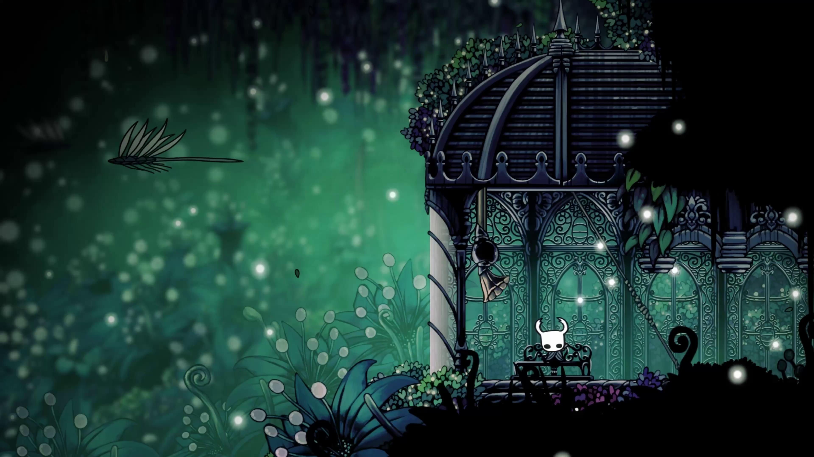
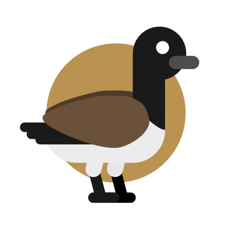

I have been coding since 2022, and I started with python, then changed languages a few times until i settled on C. I (sometimes) participate in game jams, specifically Lame Jam on itch.io, which takes place monthly.


Indie Game Dev & Hobbyist Programmer
I have been coding since 2022, and I started with python, then changed languages a few times until i settled on C. I (sometimes) participate in game jams, specifically Lame Jam on itch.io, which takes place monthly.
I am currently working on "PISCATIO", a relaxing fishing game set in a post-apocalyptic world controlled by an AI with an identity crisis. I am using raylib with C to create the game, and once I have enough progress, it will appear on my itch.io page.
As you can probably guess, I am a fan of Hollow Knight, which I am still working on completing (currently I am missing the Panthon of Hallownest). Other games I enjoy are Minecraft and Rain World, although I am not very good at neither. I also like to play badminton, swim, and do some fishing!